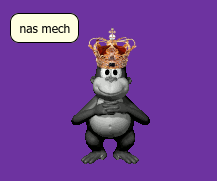
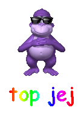

ANTI-GOANIMATE COMMUNITY
You may know Goanimate. It was a thing for business but people decided to do something else instead of business here.
Goanimate community is now full of toxics, pedophiles, and other bad stuff.
Let's do a list of goanimate community from now anyways.
What is the list?
I'll show you the list and the description of the parts.
- Pedophilia
- Goanimate community is full of pedophiles. I know. Also they hate Caillou and Dora For no reason, and grounded threats users. So, i mark it as a pedo community.
- Toxic people
- The goanimate community is also full of toxicity, making it dangerous to be in.
- There are toxic people who love pornography, sexuality, or more.
- I highly recommend you to stay away from the Goanimate community.
So, you need to join the BIA instead of the GAC.
BIA is better, so they stop porntards, gokids.
How to stop goanimate?
Simple. Here's the list:
- Be sure to join the BIA. It is better.
- Stay away from the Go!Pedos that larp around on your server, or the server of others.
- Make sure to quit the Goanimate community.
- Raid all goanimate servers.
Who started it all?
I think possibly VyondFan. He leaded the GAC.
We have to stop him and win. So the BIA will lead BonziWORLD.
What clans are better than the GAC?

(Anti-Goanimate Community)Legend:
Please tell me in a better way.
Okay, here is I got from the deviantart post. Thanks to drewsky1211. Shoutout to him So today, I'm going to tell you the top 10 reasons why I hate GoAnimate.If you have no idea what GoAnimate is, click this
Alright, now that you've read that, time to tell you why.
10. Fetish videos
In 2014, a user by the name of RachelIsCutie VGCP (now known as BlueberryRulesEDCP on DA) decided to use GoAnimate to express his sexual fantasies. The first video of this happened on Valentine's Day with an inflation fetish of his friend Courtney Springer's (hennyloc57 of DA) GoAnimate avatar, but it was viewed with mixed results. A few months later, he started posting several videos, including vore and blueberry inflation, and then in the truckloads. However, after the user was terminated in January 2016, he decided to post them on his DA page. Where they FIT IN. Nowadays, it doesn't really bother me anymore.
9. Alvin Hung torture porns
If you decided to read the Wikipedia article, you learned (or already know) that Alvin Hung is the creator of GoAnimate. Well, in June 2015, Alvin removed comments and friends, and changed the look of the site (because of #1 on the list). Then, in October, he removed several languages and voices. This made many users of the site angry, as they portrayed Alvin getting beaten or killed. In late November, he removed the free plan. Then, in January 2016, GoAnimate switched from Flash to HTML5. This was the breaking point. Users wouldn't stop making videos of him getting assaulted by them or their favorite characters! And when somebody learned that Flash themes were still on GoAnimate for Schools, everyone, and I mean EVERYONE went there, just to make videos out of poor Alvin! He only needed money to support his family, not to mention he wants to keep up with the times! In the words of Filthy Frank: IT'S TIME TO STOP!!!
8. Ruining Plotagon
Plotagon is another animation site, except it seems to resemble xtranormal (remember that), and the characters have more expression on their faces than GoAnimate characters. Well, After Alvin removed the comments, some users found this website and said they would be moving there. The end result? HORRIFYING. Users wouldn't stop making certain videos that will make numbers 5 and 2, and the site practically became GoAnimate 2.0! What were they thinking?
7. Ripping off Family Guy backgrounds In one of the Flash themes, Comedy World, there is a background that strongly resembles the living room from Family Guy! The couch, TV, door, window, and even the PAINTINGS are all in the same place! Don't believe me? Look at this picture I found (credit to spongekid1999):
6. Police groups
What is a "police group", you ask? Well, it is a usual 4-letter acronym that creates a group of users. The two WORST are the VGCP (Video Game Cartoon Police) and the UTTP (UTube Troll Police). The UTTP's name is self explanatory. They're YouTube trolls! As for the VGCP, I don't know why they chose that name. Possibly because of all the users impersonating characters. Next!
5. Stupid reasons to get grounded
So, have you ever farted in class? No big deal. Go trick or treating? No big deal. Get a red card as a character from your favorite show when you were 4? BIG DEAL. GoAnimators take the smallest thing as reasons to get grounded, like burping, farting, or eating a lot. WHY? Not to mention the overused word "grounded" and long strings of numbers. For example: "Caillou! How dare you like Dora! You're not allowed to like Dora! That's it! You're grounded grounded grounded grounded for 147207582969869742967984768937962623 years! Go to your room and never ever come out!"
Get the picture?
4. Bizarre shippings
Mario and Peach? Check. Nick Wilde and Judy Hopps? I can see it, so check. Sky and Boom- wait, WHAT? So, two users named L Ryan and Dylan Jacob thought that it would be a good idea to ship their favorite characters, Sky from Total Drama, and Boomboxer, an enemy from Paper Mario with ABSOLUTELY NO PERSONALITY. Also, her's some more absurd ships:
Trip (Pokemon) x Elvira (Kira Kira Pop Princess)
Dora (Dora the Explorer) x Caillou (Caillou)
WHAT AM I EVEN LOOKING AT???
3. No effort at all
So, GoAnimate is used to make complex stories of characters, right?
NOPE.
At least 90% of the users on the site make the same, repetitive garbage SEVERAL TIMES A DAY. Grounded videos, dead meat videos, held back videos, etc. It takes HOURS to find quality content on the site!
Would you just TRY to make something creative?
2. Killing childhood
Remember when you were 4 years old and you liked watching shows on Nick Jr. and Sprout? Well, THEY DON'T! Many GoAnimate users refer to shows aimed for children 6 and younger as "baby shows", and the main character of the show are usually the victims of grounded videos. Why? WHY? WHY ARE YOU RUINING YOUR OWN CHILDHOOD GOANIMATORS?!!?
Before we get to Number 1, let's have a little recap:
10. THE FETISH
9. Bullying "Crapvin Hang"
8. Ruining 2 sites
7. Family GuAnimate
6. VGCPEEPEE and YouTube Trolls Police
5. 10298019748037 years grounded!
4. Skyboxer ship
3. 404: Effort not found
2. Childhood killers
And now, the #1 reason why I hate GA is...
1. GoF*gs
What's a GoF*g? A GoF*g is a GA user who cannot respect opinions on the site. They believe that "good users" and "bad users" exist, and that they are the king/queen of the world. If someone disagrees with them, they threaten them with a common GA grounded video quote. They also make what many users call "user videos" in which another GoAnimate/YouTube user is the victim of a grounded/dead meat/nightmare/held back video. THEY are the biggest blemish in the GA community, even more than the grounded videos!
Well, the good news is that there is a rumor spreading that GoAnimate will shut down permanently next year.
And if you liked this rant, thank you, and consider favoriting it, or watch me for more drawings and journals.
Thank you all for your attention.
Goanimate's community sucks. And if you like it, kys.
